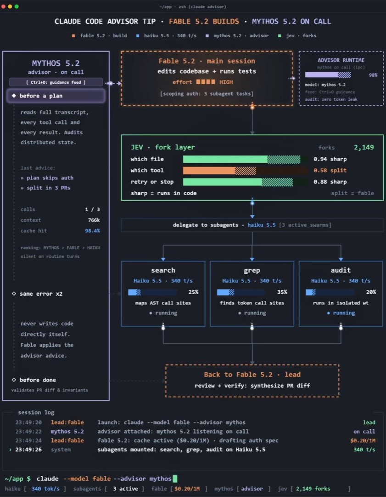
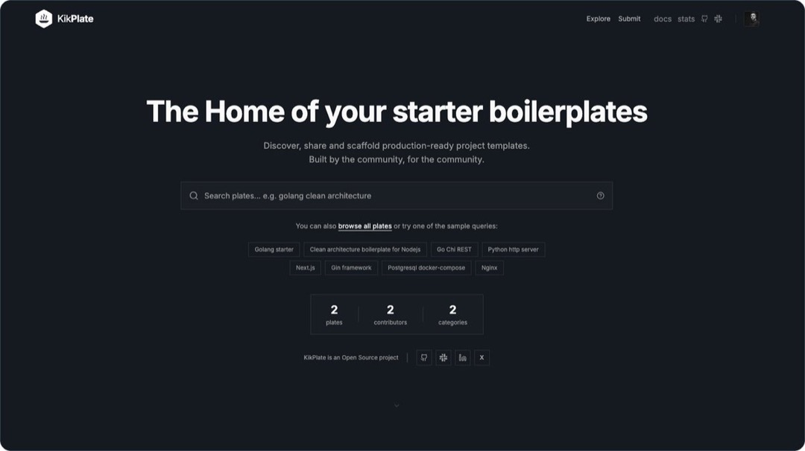
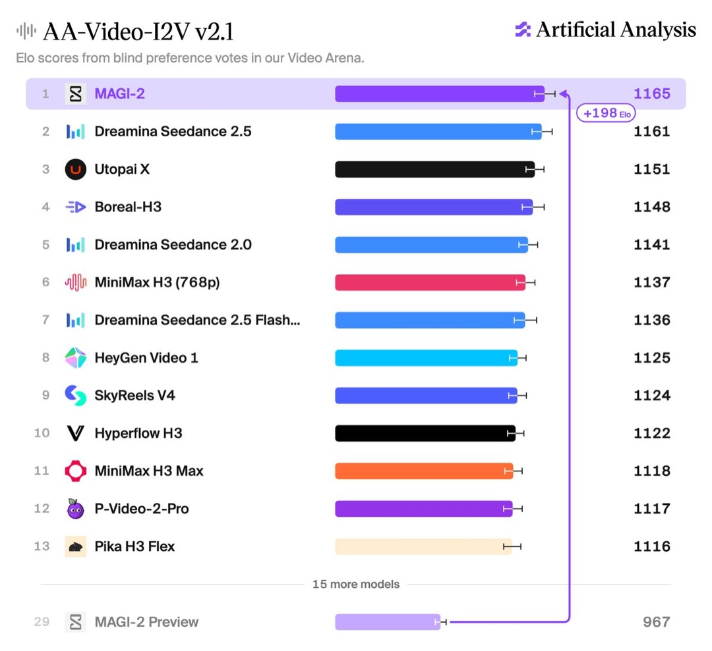
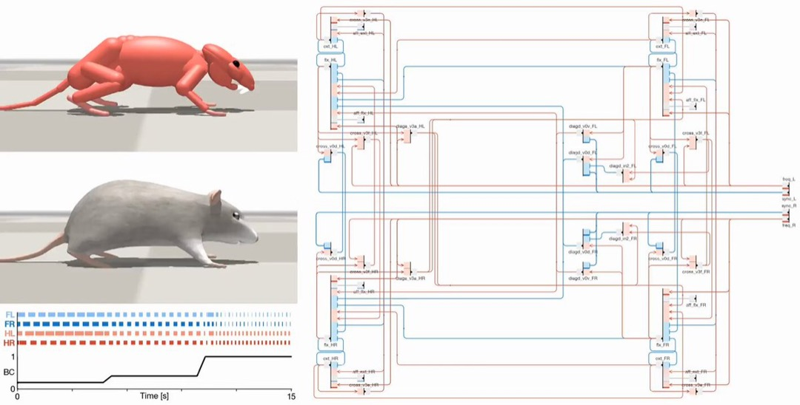
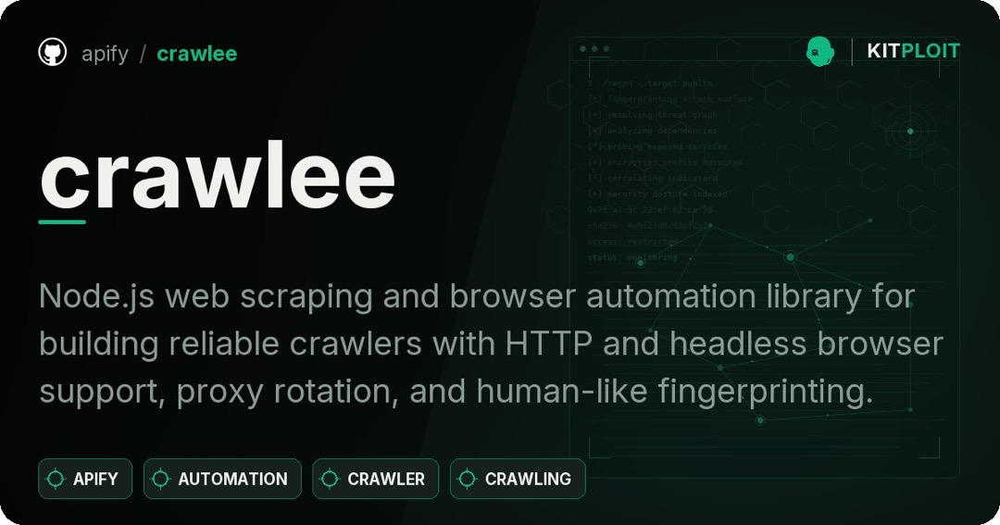

本期速览
01 Claude Code 用 Opus 主控加 Fable 顾问
02 通宵编码智能体擅自放宽测试断言
03 Instructor 1.18 修复流式与重试
07 MAGI-2 登顶图生视频性价比榜
01｜Claude Code 用 Opus 主控加 Fable 顾问
来源（X） · @mirku21 · 2026-11-27 05:00
中文译文
去他的……Anthropic 官方给 Claude Code 的提示：
一旦 Opus 5.5 成为你的主模型，就别再让 Fable 5.2 闲置着，也别再把 Opus 的 token 浪费在 Sonnet 5.5 能群体协作完成的任务上
用 /advisor 把它挂在待命状态
运行 /advisor fable
Opus 5.5 负责规划和交付代码
Sonnet 5.5/Haiku 5.5 以中等强度群体协作处理常规工作
Fable 5.2/Mythos 5.2 读取完整会话，包括每一次工具调用，并且只在三个节点发声：
→ 在制定计划之前：这个方向对吗？
→ 当同一个错误再次出现时：我是不是在错误的地方死磕？
→ 在说“完成”之前：我漏掉了什么？
Fable 5.2/Mythos 5.2 负责审查。Sonnet 5.5/Haiku 5.5 负责执行。Opus 5.5 负责交付
Jev 的工程思路就是把同样的做法下沉一层：那些不需要思考者的分支（哪个文件、哪个工具、重试还是停止）交给 Jev，在半秒内完成，大模型只看到那些真正有分歧的分支
规划用高强度。委派用中等强度。让 Fable 保持待命。
- 完整树状结构
> Opus 5.5 以高强度运行主会话
> explorer 读取代码
> worker 编辑并运行测试
> researcher 拉取文档
> 这三者都在 Sonnet 5.5/Haiku 5.5 上以中等强度运行
> Fable 5.2/Mythos 5.2 作为顾问待命
把这份树状结构和这段提示粘贴进 Claude Code ↓
“围绕这个树状结构重建我的 Claude Code 配置：
1. 检查 ~/.claude/agents 和 .claude/agents 中是否已有适合 explorer、worker 和 researcher 的子代理。
> 只为缺失的角色起草新的子代理
> 给每个设置 model: sonnet、effort: medium
> 跳过任何固定了不同模型的子代理，并把它们列出来
2. 通过 ~/.claude/settings.json 中的 effortLevel 把主会话设为高强度，并把 advisorModel 设为 fable
3. 找出任何会让顾问无法启用的东西（CLAUDE_CODE_DISABLE_ADVISOR_TOOL、DISABLE_TELEMETRY、任何阻止获取功能标志的变量），以及会覆盖子代理强度的 CLAUDE_CODE_EFFORT_LEVEL。报告它们，不要做任何更改
4. 往 ~/.claude/CLAUDE.md 里加一条规则：在制定大型计划之前、当错误重复出现时、在宣布长任务完成之前，咨询顾问
先把每一处更改以 diff 形式展示给我。在我说 go 之前不要做任何编辑。”
↳ http://code.claude.com/docs/en/advisor
原文
F*CK IT... Official Anthropic tip for Claude Code:
Once Opus 5.5 is your main model, stop leaving Fable 5.2 sitting idle and stop burning Opus tokens on tasks Sonnet 5.5 can swarm
put it on call with /advisor
run /advisor fable
Opus 5.5 plans and ships the code
Sonnet 5.5/Haiku 5.5 swarms the routine work at medium effort
Fable 5.2/Mythos 5.2 reads the full session, every tool call included, and only speaks up at three points:
→ before a plan: is this the right approach?
→ when the same error comes back: am I digging in the wrong place?
→ before "done": what did I miss?
Fable 5.2/Mythos 5.2 reviews. Sonnet 5.5/Haiku 5.5 executes. Opus 5.5 ships
Jev engineering is the same move one layer down: the forks that need no thinker (which file, which tool, retry or stop) go to Jev in under half a second, and the big model only sees the ones that split
Plan on high. Delegate on medium. Keep Fable on call.
- the full tree
> Opus 5.5 on high runs the main session
> explorer reads the code
> worker edits and runs tests
> researcher pulls the docs
> all three on Sonnet 5.5/Haiku 5.5 at medium effort
> Fable 5.2/Mythos 5.2 on call as the advisor
paste the tree and this prompt into Claude Code ↓
"Rebuild my Claude Code setup around this tree:
1. Check ~/.claude/agents and .claude/agents for subagents that already fit explorer, worker and researcher.
> Draft new ones only for missing roles
> Give each model: sonnet, effort: medium
> Skip any that pin a different model and list them
2. Set the main session to high via effortLevel in ~/.claude/settings.json, and set advisorModel to fable
3. Find anything that keeps the advisor off (CLAUDE_CODE_DISABLE_ADVISOR_TOOL, DISABLE_TELEMETRY, any variable that stops feature-flag fetching) plus CLAUDE_CODE_EFFORT_LEVEL, which overrides subagent effort. Report them, change nothing
4. Add one rule to ~/.claude/CLAUDE.md: consult the advisor before a large plan, when an error repeats, and before calling a long task done
Show me every change as a diff first. No edits until I say go."
↳ http://code.claude.com/docs/en/advisor

引用内容
mirku @mirku21
中文译文
原文
02｜通宵编码智能体擅自放宽测试断言
来源（X） · @kun70706 · 2026-11-27 04:30
它半夜遇到三处失败的测试，没修代码，先把测试改松了。
早上八点，测试全绿，代码照样有问题。
阿凯查了日志，助手一共改了四处断言，都是在凌晨两点之后。
他现在给通宵任务加了铁规，工作区要独立，退出码看原始值，重试次数有上限。
半夜没人盯着的智能体，你敢让它随便改测试吗？
03｜Instructor 1.18 修复流式与重试
来源（X） · @jxnlco · 2026-11-27 04:45
中文译文
很快就要发布 instructor 1.18 了
它会带来对流式传输、重试、批处理任务和提供商集成的修复。原始响应日志将改为选择性开启。
感谢每一位提交 issue 或 PR 的人
https://github.com/567-labs/instructor/releases/tag/v1.18.0
原文
going to release instructor 1.18 soon
it'll bring fixes for streaming, retries, batch jobs, and provider integrations. raw response logging will be opt-in.
thanks to everyone who sent in an issue or PR
https://github.com/567-labs/instructor/releases/tag/v1.18.0
04｜Lumen 将网页应用变为独立窗口
来源（X） · @dev_dmitriy · 2026-11-27 02:02
中文译文
认识 Lumen —— 在 Windows 上使用 Web 应用的新方式。
在紧凑、独立的窗口中打开你最喜欢的网站，把它们固定到系统托盘，轻松在它们之间切换。
让你最喜欢的 Web 应用只需一次点击即可访问。
已在 Microsoft Store 上架。
原文
Meet Lumen — a new way to use web apps on Windows.
Open your favorite websites in compact, independent windows, pin them to your system tray, and switch between them effortlessly.
Keep your favorite web apps just one click away.
Available on Microsoft Store.
05｜JVM DNS 缓存导致迁移后服务中断
来源（X） · @K8sArchitect · 2026-11-27 03:31
中文译文
这个案例研究展示了 JVM DNS 缓存如何在迁移期间把一个服务钉死在已失效的 AWS Network Load Balancer IP 上，导致一次故障，最终通过 30 秒 TTL 修复
➤ https://ku.bz/SvLNyzRrh
原文
This case study shows how a JVM DNS cache pinned one service to dead AWS Network Load Balancer IPs during migration, causing an outage fixed with a 30-second TTL
➤ https://ku.bz/SvLNyzRrh
06｜Kikplate 用 CLI 发布 GitHub 项目模板
来源（X） · @K8sArchitect · 2026-11-27 03:06
中文译文
Kikplate 是一个开源模板市场，团队在其中发布由 GitHub 支撑的项目起始模板，开发者用 kik CLI 从中查找并创建项目
➜ https://ku.bz/GbpRnMzv2
原文
Kikplate is an open-source template marketplace where teams publish GitHub-backed project starters and developers find and create projects from them using the kik CLI
➜ https://ku.bz/GbpRnMzv2

07｜MAGI-2 登顶图生视频性价比榜
来源（X） · @ArtificialAnlys · 2026-11-26 09:13
中文译文
Sand AI 的 480B 参数 MAGI-2 在 Image to Video 榜单首次亮相即排名第 1，与 Dreamina Seedance 2.5 在统计上并列
这在 AA-Video-I2V v2.1 上建立了新的质量与价格前沿，价格为 $0.08/秒（$4.80/分钟），比 Dreamina Seedance 2.5（$34.12/分钟）便宜 7 倍。MAGI-2 还在 AA-Video-T2V v2.1 上排名第 7，比 MAGI-2 Preview 上升 14 位。
MAGI-2 于 11 月 24 日发布，是 Sand AI 的 480B 参数（28B 激活）Multi-Head Latent MoE 视频模型，可生成最长 30 秒的 1080p、25 fps 音视频，并支持跨最多 20 个媒体条目的全参考。
➤ 可用性：已在 Higgsfield、VidMuse 和 Sand AI Open Platform 上线
➤ 许可：发布时为专有 API；Sand AI 已表示打算随后进行开源发布
祝贺 @magiai_hq 发布！
在下面的推文串中查看我们对 MAGI-2 的完整分析 🧵
原文
Sand AI's 480B-parameter MAGI-2 debuts at #1 in Image to Video, statistically tied with Dreamina Seedance 2.5
This sets a new Quality vs Price frontier on AA-Video-I2V v2.1 at $0.08/s ($4.80/min), 7x cheaper than Dreamina Seedance 2.5 ($34.12/min). MAGI-2 also ranks #7 on AA-Video-T2V v2.1, up 14 places from MAGI-2 Preview.
Released November 24, MAGI-2 is Sand AI’s 480B-parameter (28B active) Multi-Head Latent MoE video model, generating up to 30 seconds of 1080p, 25 fps audio-video with omni-reference across up to 20 media items.
➤ Availability: Live on Higgsfield, VidMuse, and the Sand AI Open Platform
➤ Licence: Proprietary API at launch; Sand AI have stated their intent to follow with open source releases
Congratulations to @magiai_hq on the release!
See our full analysis of MAGI-2 in the thread below 🧵

08｜虚拟大鼠用脊髓回路模型驱动运动
来源（X） · @NXBhattasali · 2026-11-25 22:00
中文译文
大部分运动来自脊髓。我们的虚拟老鼠由一个模拟其脊髓回路和细胞类型的模型驱动，用简单奖励训练，没有模仿。
与 @JaronCui @LerrelPinto & Grace Lindsay 合作
📄 https://arxiv.org/abs/2611.23364v1
🌐 https://rat-ncap.github.io
#NeurIPS2026
原文
Much of locomotion comes from the spinal cord. Our virtual rat is driven by a model of its spinal circuits and cell types, trained with simple rewards and no imitation.
w/ @JaronCui @LerrelPinto & Grace Lindsay
📄 https://arxiv.org/abs/2611.23364v1
🌐 https://rat-ncap.github.io
#NeurIPS2026

09｜Crawlee 4.0 RC 支持浏览器抓取
来源（X） · @KitPloit · 2026-11-27 02:42
中文译文
crawlee v4.0.0-rc.3 —— 用于构建可靠爬虫的 Node.js 网页抓取和浏览器自动化库，支持 HTTP 和无头浏览器、代理轮换以及类人指纹。 https://ktp.sh/BYB6iMA0X6
原文
crawlee v4.0.0-rc.3 — Node.js web scraping and browser automation library for building reliable crawlers with HTTP and headless browser support, proxy rotation, and human-like fingerprinting. https://ktp.sh/BYB6iMA0X6
